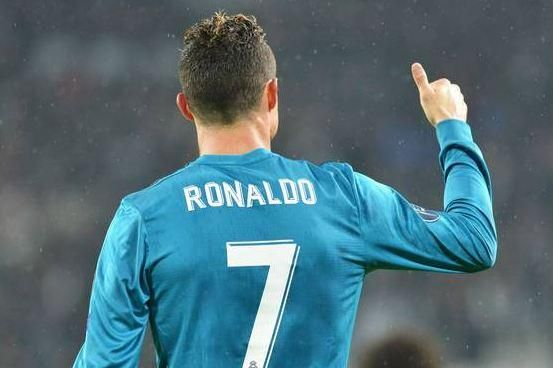
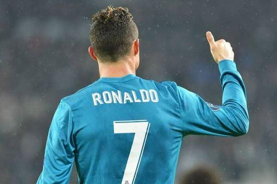

CRISTIANO RONALDO

Cristiano Ronaldo Dos Santos Aveiro, É um dos maiores jogares de futebol do mundo atualmente, com um total de 885 gols e 1220 partidas na sua carreira, na maioria dos clubes que passou utilizou a camisa de numero 7 dando sentindo a sigla CR7. Conquistou 34 titulos na carreira e pode ser que todos esses numeros aumentem. Passou por poucos clubes profissionais em sua carreira como:
No Real madrid, foi o jogador que mais marcou na história do clube, com impressionantes 438 gols em 450 jogos, Conquistou pelo clube 4 Champions League, 3 Mundiais de Clubes, 3 Supertaças Europeias, 2 Ligas, 2 Taças do Rei e 2 Supertaças da Espanha. mas infelizmente isso acabou em 2018 quando decidiu defender novamente a camisa do Manchester United.
 

Atualmente foi vendido por 200 milhões de Euros pelo Manchester United e joga no clube arabe sáudita Al-Nassr, já conquistou o seu primeiro título saudita cujo nome: Copa dos Campeões árabe, fazendo um gol de desenpate no time adversário Al-Hilal.
Cristiano ronaldo obteve apenas 1 titulo pela seleção de portugal no ano de 2016 em que ganhou a Eurocopa, Fez no total de 124 gols em 202 partidas pela seleção sendo o maior marcador português atualmente .